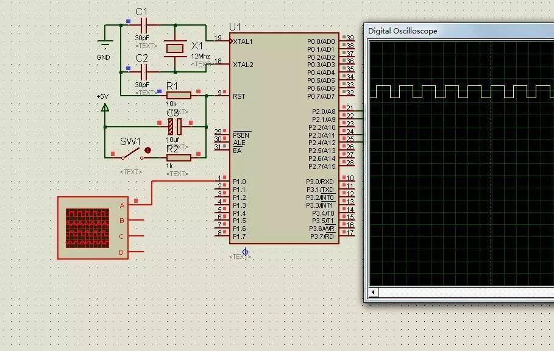
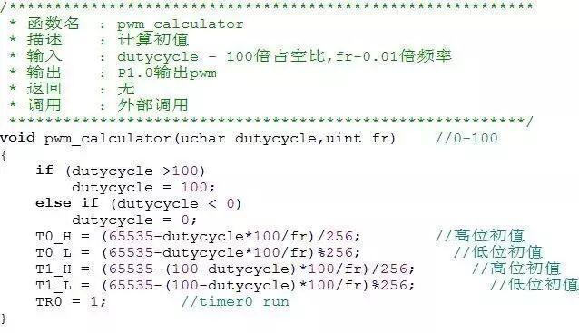
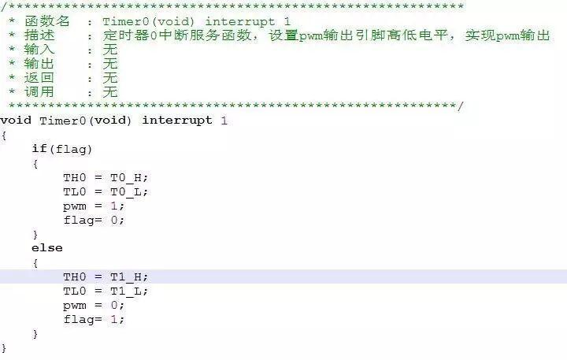
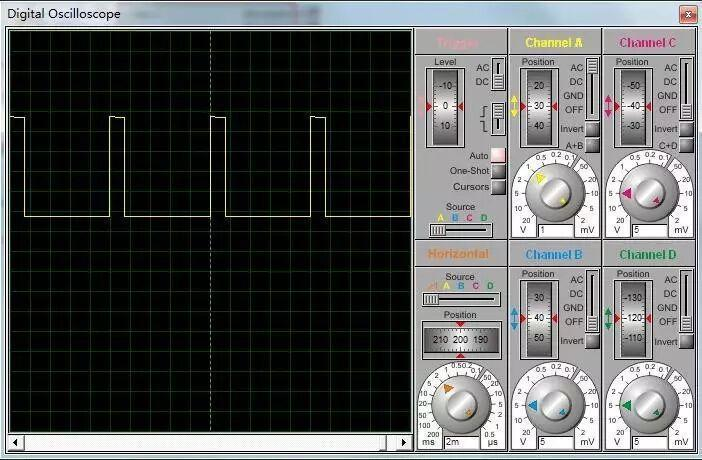
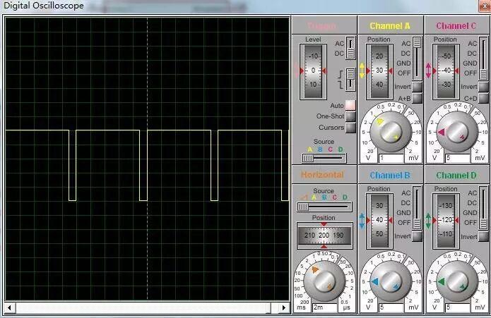
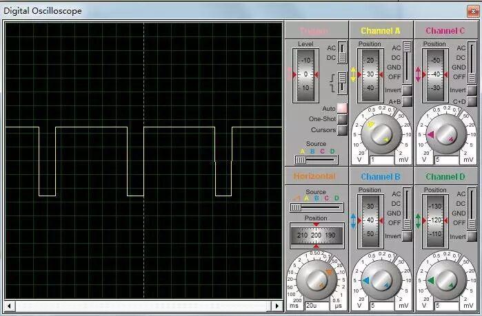
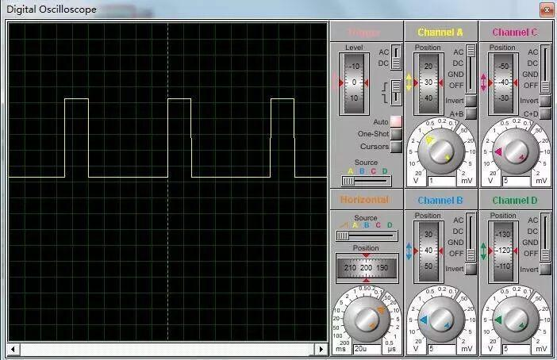

使用小程序
1 软件延时法
利用软件延时函数，控制电平持续的时间，达到模拟pwm的效果。
程序如下：
#include<reg52.h>
sbit pwm=P1^0;
main()
{
while(1)
{
pwm=1;
delayus(60);//置高电平后延时60us，占空比60%
pwm=0;
delayus(40);
}
}
void delayus(uint x)
{
while(x--);
}
proteus软件仿真结果如下：

可见，用这种延时函数的方法就能简单地模拟出pwm输出。但是这种方法的缺点也相当明显。当程序除了要输出pwm波还要执行其他操作比如键盘扫描、显示等操作时，需要占用CPU一定的机器周期，这样就会影响pwm的准确度。现在很少会用到这种方法，接下来要介绍的是比较常用的方法。
2 定时器产生pwm
这种方法利用了定时器溢出中断，在中断服务程序改变电平的高低，在程序较复杂、多操作时仍能输出较准确的pwm波形。
2.1 注意事项
2.2.1中断服务程序的内容。
一般来说中断服务程序只完成改变标志位、转换高低电平的功能，如果中断服务程序中有太多的操作会影响pwm波的输出，尤其是除法、取余、浮点数运算会占用大量的机器周期，应在中断外完成运算。
2.2.2定时器装入初值的问题。
装入初值不能太接近于定时器的溢出值。如我们使用定时器方式1，最多能计65536个数，假设我们转入的初值为65534，那么定时器计两个数就会进入中断，这样会使程序紊乱而其他功能无法正常地执行，所以一般要留50-100个数的裕量。
2.2 定时器工作方式
在定时器工作方式的选择上，可以选择定时器的工作方式0、1、2都可以，本文采用的是工作方式1，即16位定时器，这样可以获得较宽的调频范围。
2.3 定时器初值的计算
设占空比为α，频率为f
产生高电平时装入定时器高8位的值应为
产生高电平时装入定时器低8位的值应为
显然，产生低电平时的公式只要把α换成（1-α）就行了。
然而在51单片机中，浮点数运算需要消耗cpu很长的时间，为了提高程序效率，通常用100倍的占空比来计算。同时，要注意数据类型，避免超出范围，影响计算结果。关于C51的乘除法问题，可以看以下这篇文章（点击阅读原文直接进入）：
http://blog.163.com/ssou_1985/blog/static/295320362010311102232210/
修改后的公式如下：
a为100倍占空比，fr为0.01倍频率
TH0 = (65535-a*100/fr)/256;//高位初值
TL0 = (65535-a*100/fr)%256;
同样，低电平的公式只需把a换成（100-a）即可。
2.4 例程
本例程采用定时器T0在工作方式1下产生一路PWM，用独立键盘控制频率、占空比的加减，频率可调范围100Hz-10kHz，占空比0-100%（均为理论值，实际值略低）
部分代码如下：

注：T0_H , T0_L , T1_H , T1_L 均用于暂时存储初值，进入中断服务程序后直接给寄存器TH0、TL0赋值，避免了在中断中计算。

注：flag为pwm输出标志，flag=1输出高电平，flag=0输出低电平
完整的代码请到我的网盘下载（已失效）
http://yunpan.cn/QzKaWM8VesFyc
2.5 软件仿真结果
2.5.1频率为100Hz
a.占空比约15%

b.占空比95%

2.5.2 频率为10KHz
a.占空比15%

b.占空比90%

v信息部/黄治勇